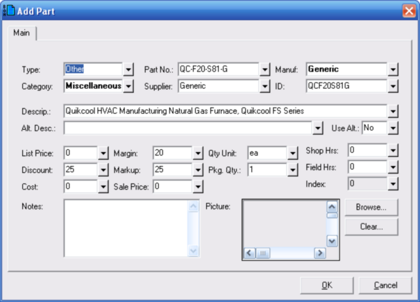

Adding, Editing and Copying Parts (Bill of Materials Parts Database Window) |
  
|
Adding, Editing and Copying Parts (Bill of Materials Parts Database Window) |
|
To add a new part to the database: Click the menu "Part | Add New Part to Database." Then enter the part number and other data on the Add Part dialog and click OK.
To edit an existing part in the database: Select the part in the list and click the menu "Part | Edit Part." Then edit the inputs on the Edit Part dialog and click OK. You can also edit a part by directly editing cells in the grid.
To edit multiple parts at once: See Editing Multiple Parts.
To copy an existing part to a new part in the database: Select the part in the list and click the menu "Part | Copy Current Part to a New Part in Database." Then edit the inputs on the Copy Part dialog and click OK.

The above dialog is similar to the one used for editing an existing part, as well as the one used for copying an existing part to a new part.
Type: This input is used to determine whether the part to be added is a ductwork (a duct, fitting, register or grille) or not. If you select Other, the dialog will appear as it does in the above picture. If you select Duct, Fitting or Register/Grille, an additional Ductwork tab will be added beside the Main tab. You will then need to enter sizes and other data on the Ductwork tab before the part can be accepted into the database.
Category, Part No., etc.: These and other inputs are used to help organize and define the part
List Price, Discount, Cost, Margin, Markup, and Sale Price: Some of the price related inputs will be changed automatically as you type data into others. For example, if you type a value in the List Price input the Cost input will be changed based based on the value showing in the Discount input. As the Cost input is changed, the Sale Price input will be changed based on the value showing in the Margin input.
Shop Hrs, Field Hrs: Click the button beside these inputs to open a popup dialog for help in calculating the number of labor hours. The dialog will differ depending on what is selected in the Type input.